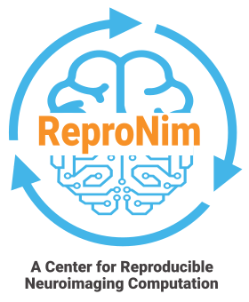
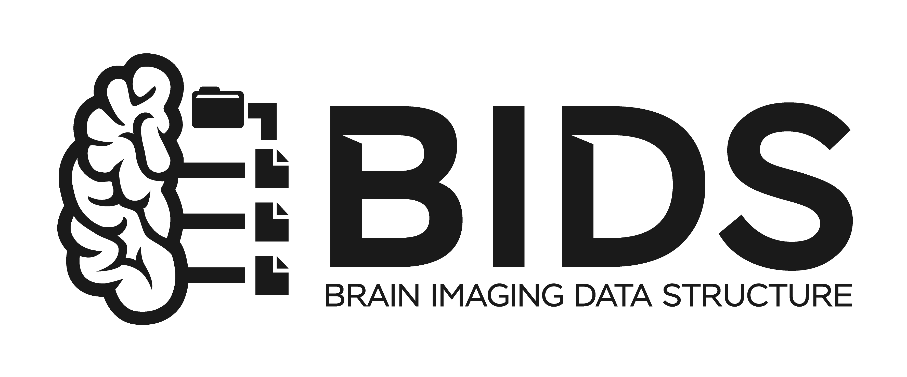
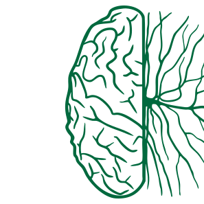

Centroids
Yaroslav O. Halchenko
John Lee
Austin Macdonald
Isaac To
Vadim Melnik
Cody Baker
Collaborators
Michael Hanke
Joey Hess
Adina Wagner
Chris Markiewicz
Satrajit Ghosh
Franco Pestilli
David N. Kennedy
Jean-Baptiste Poline
Affiliated Faculty
James V. Haxby
Jeremy Rothman Manning
Matthijs (Matt) van der Meer
Luke Chang
Tor D. Wager
Emeritus
Jason Gors
Matteo Visconti di Oleggio Castello
Matthew Brett
Samuel Nastase
Nikolaas N. Oosterhof
Benjamin Poldrack
Gergana Alteva
Oliver Contier
Kyle Meyer
Chris Cheng
Soichi Hayashi
Vanessa Sochat
John Wodder
Horea-Ioan Ioanas
Worked on directly


Large communities we take part in
Debian Med
Funders and in-kind support
